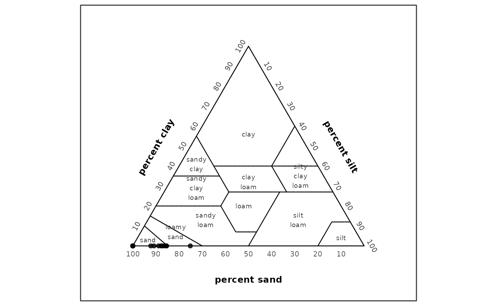
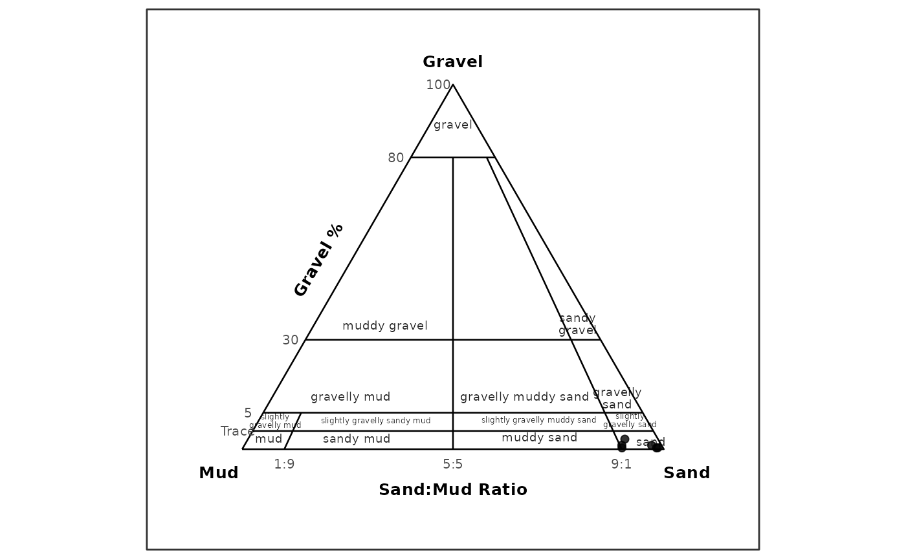
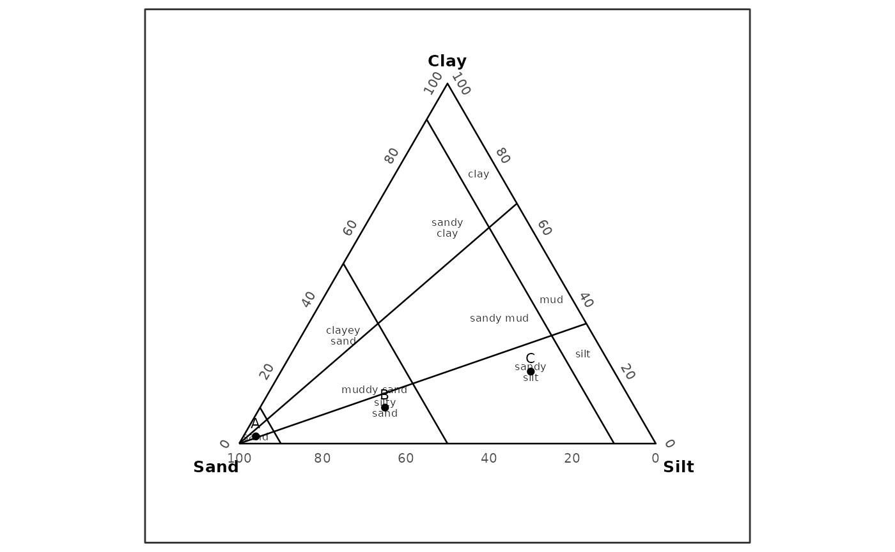

Overview
classify_texture() provides two texture-classification
paths:
- USDA 12-class major texture classification from sand, silt, and clay percentages.
- GRADISTAT-style rule classification for gravel-sand-mud textural groups and no-gravel sand-silt-clay mini texture classes.
- Generic classification against user-supplied ternary texture polygons.
The USDA path is rule-based. It does not require bundled USDA polygon data, and no USDA polygon dataset is included as package data.
The GRADISTAT path is also rule-based. It uses source-grounded
decision tables from the user-provided GRADISTAT v8 workbook and the
textural-output context described by Blott and Pye (2001). Sediment-name
composition is available as a separate step or optional output.
GRADISTAT ternary plotting is available through
plot_texture_ternary().
long_file <- system.file("extdata", "grain.long.csv", package = "grainsizeR")
wide_file <- system.file("extdata", "grain.wide.csv", package = "grainsizeR")
long_gs <- read_gsd(long_file)
wide_gs <- read_gsd(wide_file, format = "wide")USDA Major Texture Classification
Use scheme = "usda" and method = "rules"
for the validated USDA major-class workflow.
samples <- data.frame(
sample_id = c("A", "B", "C"),
sand = c(85, 40, 20),
silt = c(10, 40, 20),
clay = c(5, 20, 60)
)
classify_texture(samples, scheme = "usda", method = "rules")
#> # A tibble: 3 × 11
#> sample_id sand silt clay texture_class_id texture_class
#> <chr> <dbl> <dbl> <dbl> <chr> <chr>
#> 1 A 85 10 5 loamy_sand loamy sand
#> 2 B 40 40 20 loam loam
#> 3 C 20 20 60 clay clay
#> # ℹ 5 more variables: classification_method <chr>, rule_status <chr>,
#> # all_rule_matches <chr>, rule_conflict <lgl>, rule_gap <lgl>USDA texture ternary plotting is available through
plot_texture_ternary(). The stable
plot_texture_triangle() function name remains available for
compatibility. The bundled long-format example includes finer fractions
and can be used for the USDA texture workflow. Some open-ended tails
require explicit extrapolation for resolved sand, silt, and clay
percentages; this example makes that assumption visible. USDA ternary
plots draw the 12 major-class boundaries from the package’s
independently expressed rule logic and annotate ternary percentage axes
directly, without ordinary Cartesian x/y tick labels. USDA ternary plots
place percent sand, percent silt, and
percent clay outside the corresponding triangle sides.
usda_fractions <- suppressWarnings(gs_fractions_wide(
long_gs,
scheme = "usda",
normalize = "fine_earth",
extrapolate = "warn_linear"
))
usda_example <- data.frame(
sample_id = usda_fractions$sample_id,
sand = usda_fractions$sand_percent,
silt = usda_fractions$silt_percent,
clay = usda_fractions$clay_percent
)
usda_components <- c("sand", "silt", "clay")
usda_example <- usda_example[
stats::complete.cases(usda_example[usda_components]) &
rowSums(usda_example[usda_components] >= 0 & usda_example[usda_components] <= 100) == 3 &
abs(rowSums(usda_example[usda_components]) - 100) < 1e-6,
]
head(classify_texture(usda_example, scheme = "usda", method = "rules"))
#> # A tibble: 6 × 11
#> sample_id sand silt clay texture_class_id texture_class
#> <chr> <dbl> <dbl> <dbl> <chr> <chr>
#> 1 S01 87.5 12.5 0 sand sand
#> 2 S02 100 0 0 sand sand
#> 3 S03 100 0 0 sand sand
#> 4 S04 90.9 9.13 0 sand sand
#> 5 S05 92.2 7.76 0 sand sand
#> 6 S06 100 0 0 sand sand
#> # ℹ 5 more variables: classification_method <chr>, rule_status <chr>,
#> # all_rule_matches <chr>, rule_conflict <lgl>, rule_gap <lgl>
plot_texture_ternary(usda_example, scheme = "usda", labels = FALSE)
Input percentages must be numeric, finite, between 0 and 100, and sum
to approximately 100. classify_texture() does not silently
normalize invalid sand, silt, and clay sums.
Data frames with ternary left, right, and
top columns are also accepted for USDA rules. They are
interpreted as left = sand, right = silt, and
top = clay.
Method Selection
method = "auto" chooses the USDA rule path when
scheme = "usda" and no texture polygons are supplied. It
also chooses GRADISTAT rules when scheme = "gradistat" and
no texture polygons are supplied.
classify_texture(samples, scheme = "usda", method = "auto")
#> # A tibble: 3 × 11
#> sample_id sand silt clay texture_class_id texture_class
#> <chr> <dbl> <dbl> <dbl> <chr> <chr>
#> 1 A 85 10 5 loamy_sand loamy sand
#> 2 B 40 40 20 loam loam
#> 3 C 20 20 60 clay clay
#> # ℹ 5 more variables: classification_method <chr>, rule_status <chr>,
#> # all_rule_matches <chr>, rule_conflict <lgl>, rule_gap <lgl>method = "rules" supports scheme = "usda"
and scheme = "gradistat". Other schemes require
user-supplied polygons because grainsizeR does not bundle built-in
texture polygon datasets yet.
method = "polygon" uses the generic user-supplied
polygon workflow.
GRADISTAT Texture Classification
Use scheme = "gradistat" and
method = "rules" for GRADISTAT-style texture
classification. The gravel_sand_mud basis requires
gravel, sand, and mud percentage
columns. The bundled dry-sieve wide example supports this
GRADISTAT-style gravel-sand-mud workflow.
wide_gradistat <- suppressWarnings(gs_fractions_wide(wide_gs, scheme = "gravel_sand_mud"))
gsm <- data.frame(
sample_id = wide_gradistat$sample_id,
gravel = wide_gradistat$gravel_percent,
sand = wide_gradistat$sand_percent,
mud = wide_gradistat$mud_percent
)
gsm <- gsm[stats::complete.cases(gsm[c("gravel", "sand", "mud")]), ]
classify_texture(
head(gsm, 6),
scheme = "gradistat",
method = "rules",
basis = "gravel_sand_mud",
include_sediment_name = TRUE
)
#> # A tibble: 6 × 21
#> sample_id gravel sand mud texture_class_id texture_class ternary_basis
#> <chr> <dbl> <dbl> <dbl> <chr> <chr> <chr>
#> 1 S01 0.624 85.0 14.4 slightly_gravelly_m… slightly gra… gravel_sand_…
#> 2 S02 0.224 97.8 1.93 slightly_gravelly_s… slightly gra… gravel_sand_…
#> 3 S03 0.312 95.1 4.60 slightly_gravelly_s… slightly gra… gravel_sand_…
#> 4 S04 0.153 89.6 10.2 slightly_gravelly_m… slightly gra… gravel_sand_…
#> 5 S05 0.295 88.8 10.9 slightly_gravelly_m… slightly gra… gravel_sand_…
#> 6 S06 0.230 98.8 0.964 slightly_gravelly_s… slightly gra… gravel_sand_…
#> # ℹ 14 more variables: classification_method <chr>,
#> # classification_status <chr>, notes <chr>, sand_mud_ratio <dbl>,
#> # textural_group_class_id <chr>, textural_group <chr>,
#> # mini_texture_class_id <chr>, mini_texture_class <chr>,
#> # dominant_gravel_class <chr>, dominant_sand_class <chr>,
#> # dominant_silt_class <chr>, sediment_name <chr>, sediment_name_status <chr>,
#> # sediment_name_method <chr>The sand_silt_clay_no_gravel basis requires
sand, silt, and clay percentage
columns.
ssc <- data.frame(
sample_id = c("A", "B", "C"),
sand = c(95, 60, 20),
silt = c(3, 30, 60),
clay = c(2, 10, 20)
)
classify_texture(
ssc,
scheme = "gradistat",
method = "rules",
basis = "sand_silt_clay_no_gravel"
)
#> # A tibble: 3 × 11
#> sample_id sand silt clay texture_class_id texture_class ternary_basis
#> <chr> <dbl> <dbl> <dbl> <chr> <chr> <chr>
#> 1 A 95 3 2 sand sand sand_silt_clay_no_…
#> 2 B 60 30 10 silty_sand silty sand sand_silt_clay_no_…
#> 3 C 20 60 20 sandy_silt sandy silt sand_silt_clay_no_…
#> # ℹ 4 more variables: classification_method <chr>, classification_status <chr>,
#> # notes <chr>, silt_clay_ratio <dbl>GRADISTAT rule classification returns texture_class_id,
texture_class, classification_method,
classification_status, ternary_basis,
notes, and a ratio audit column. Input percentages must sum
to approximately 100 for the selected basis; grainsizeR does not
silently normalize invalid sums.
TEXTURAL GROUP and SEDIMENT NAME are
distinct GRADISTAT-style outputs. Sediment-name composition can be
requested during GRADISTAT classification with
include_sediment_name = TRUE, or added afterward with
gs_gradistat_sediment_name(). If dominant size-subclass
columns are missing, the textural group is returned as a partial
sediment name.
The same supported bases can be drawn as texture ternary plots. For
the dry-sieve wide example, sample labels are suppressed to keep the
GRADISTAT gravel-sand-mud class labels readable. In the gravel-sand-mud
basis, the ternary plot places Gravel at the top,
Mud at the lower-left apex, and Sand at the
lower-right apex. Gravel percentage guides and sand/mud ratio guides are
drawn as ternary annotations rather than Cartesian axes; unlike the USDA
display, these GRADISTAT apex labels remain at the vertices.
plot_texture_ternary(
head(gsm, 6),
scheme = "gradistat",
basis = "gravel_sand_mud",
point_id = "sample_id",
show_sample_labels = FALSE
)
plot_texture_ternary(
ssc,
scheme = "gradistat",
basis = "sand_silt_clay_no_gravel",
point_id = "sample_id"
)
Distribution, cumulative, fraction, USDA texture ternary, and GRADISTAT texture ternary plots are R-native functional replacements, not Excel visual clones.
plot_texture_ternary() is the preferred plotting name in
new examples. plot_texture_triangle() remains available as
an equivalent compatibility alias, while plot_trigon() is
retained for legacy raw-data ternary workflows.
Output Columns
USDA rule classification returns the input rows with these classification columns appended:
texture_class_idtexture_classclassification_methodrule_statusall_rule_matchesrule_conflictrule_gap
For valid, clean USDA inputs, classification_method is
"usda_major_rules" and rule_status is
"classified".
Polygon classification also reports public class labels with
texture_class_id and texture_class, while
retaining polygon-specific component, coordinate, and status columns
such as left, right, top,
x, y, resolved, and
ambiguous.
User-Supplied Polygon Classification
Generic polygon classification remains available for user-provided texture systems. The example below defines a synthetic full ternary region for demonstration only; it is not an official texture system.
polygons <- data.frame(
scheme = "synthetic_ternary",
class_id = "all",
class_name = "Synthetic full ternary area",
vertex_id = 1:3,
left = c(100, 0, 0),
right = c(0, 100, 0),
top = c(0, 0, 100),
left_component = "sand",
right_component = "silt",
top_component = "clay",
reference_id = NA_character_,
reference = NA_character_
)
polygons <- validate_texture_polygons(polygons)
synthetic <- data.frame(
sample_id = rep("A", 4),
size_mm = c(2, 0.05, 0.002, 0.001),
retained = c(10, 40, 30, 20)
)
synthetic_gs <- as_gsd_tbl(
synthetic,
sample_id,
size_mm,
retained,
value_type = "percent"
)
classify_texture(
synthetic_gs,
texture_polygons = polygons,
scheme = "synthetic_ternary",
method = "polygon"
)
#> # A tibble: 1 × 13
#> sample_id scheme texture_class_id texture_class left right top x y
#> <chr> <chr> <chr> <chr> <dbl> <dbl> <dbl> <dbl> <dbl>
#> 1 A synthe… all Synthetic fu… 40 30 20 0.444 0.192
#> # ℹ 4 more variables: resolved <lgl>, ambiguous <lgl>, normalize <chr>,
#> # interpolation_scale <chr>Limitations
The USDA workflow covers only the 12 major USDA textural classes. Sand-size modifier subclasses such as coarse sand, fine sand, very fine sand, coarse sandy loam, fine sandy loam, and very fine sandy loam are not implemented. They may be considered later as qualitative descriptor columns for D50 or particle-size summaries.
No USDA polygon dataset or USDA rule-data object is bundled as runtime package data.
GRADISTAT gravel-sand-mud and sand-silt-clay no-gravel ternary
plotting is implemented through plot_texture_ternary().
Full Excel visual parity is not claimed.
CRAN readiness is not claimed in this vignette.
Provenance and Validation
The public USDA classification path uses an internal rule helper validated against USDA/NRCS validation examples and boundary cases. Public API tests cover representative official, targeted, and boundary points.
Performance notes are informational. The USDA rule classifier is vectorized and expected to be lighter than repeated polygon point-in-polygon checks for this built-in USDA path, but formal benchmarking is not included.
The public GRADISTAT classification path uses independently written R decision rules based on the documented GRADISTAT behavior. The workbook was used only as a reference implementation, and VBA source code was not copied.